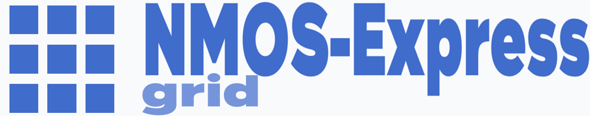

Vidéo
Audio
Data
Virtual
Salvo
>>
SYSTEM LOGS
Enregistrer l'état de commutation
Nom du salvo / workflow
Catégories sources ouvertes :
Catégories destinations ouvertes :
0 commutation(s) active(s) entre les catégories ouvertes
Annuler
Enregistrer le salvo